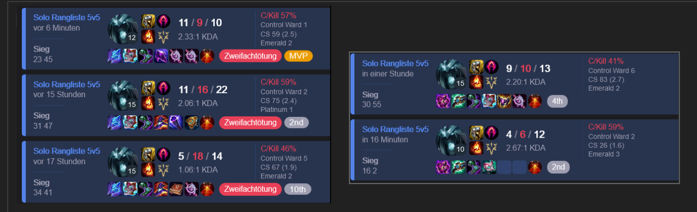
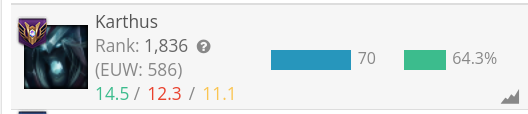
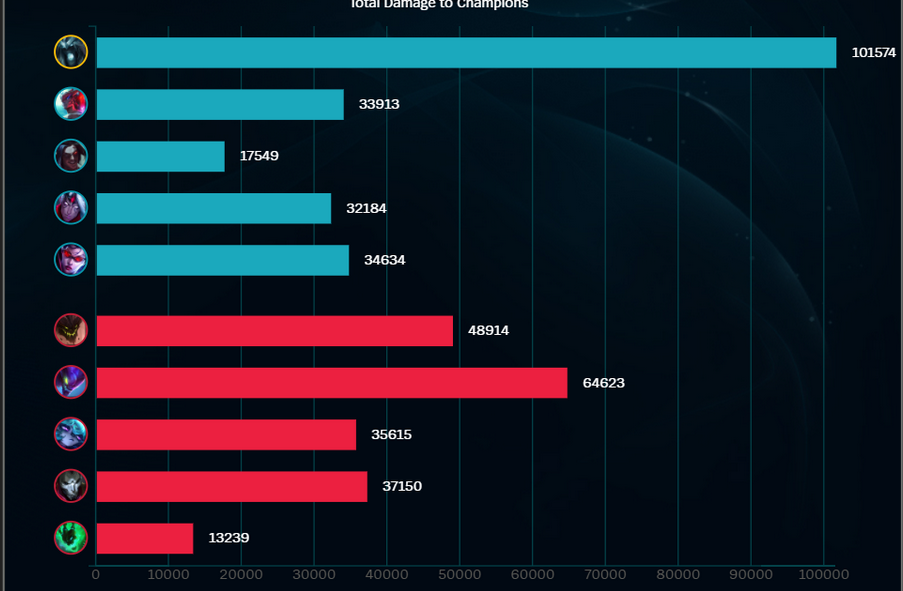

Karthus support
Why?
- Insane Level
- Good Poke
- Hard to gank after Level 3
- Wall is good disengage
- Can trade jungle life with passive most of the time
- Can rush Dragon and Baron fast
- Karthus Ult
- Scales better than other supports
How?
Early
- Insane Level
- Good Poke
- We can always trade
- Enemy adc will kill me and die in passive
- 300g for them, 300g + solo exp + plates for us
- Karthus Wall can stop enemy from farming under tower
- Karthus can dive early because passive
Mid to late
- Karthus ult before teamfight -> enemy adc and mid are already half life
- Karthus dies -> Enemy can't walk through passive
KDA doesn't matter


Look damage
(dont)
